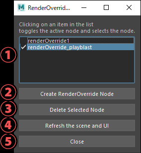

Shelf¶
Contents of this page:
Overview¶
When the RenderOverride plug-in is successfully loaded, the “RenderOverride” Shelf is automatically loaded
Please make sure that the following Shelf is loaded

Description of each tool¶
1. Node Editor¶
Use this tool for creating RenderOverride nodes, switching active nodes, etc.
Clicking on the icon opens a window that looks like this
Node List
A list of RenderOverride nodes present in the Maya® scene is displayed.
The checkbox for each item represents the on / off of the
Enableattribute.Clicking on a node in the list selects it and makes it active.
(The
Enableattribute of the selected node will be on and the other nodes will be off)
Create RenderOverride Node
Creates a RenderOverride node
The created node becomes active
Delete Selected Node
Delete the node selected in the UI
Refresh the scene and UI
Refresh Maya® scene and UI
Close
Close window
2. Refresh¶
Refresh the view
If the view does not refresh after changing the attribute of the RenderOverride node, click this button to refresh the view